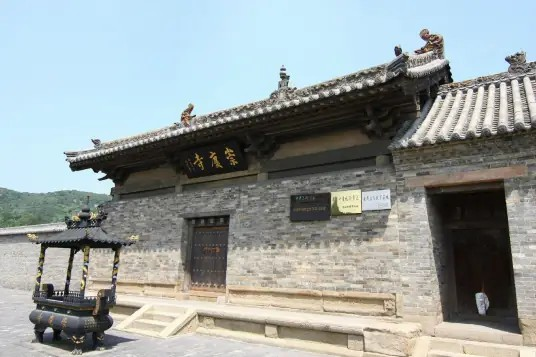

崇庆寺 |
返回主页 |  | |
| 崇庆寺，位于山西省长治市长子县城东南22千米的紫云山山腰下。 占地面积1650平方米左右。 始建于北宋大中祥符九年（1016年）。 崇庆寺坐北朝南，东、西、北三面环山，耸立如屏，寺南山峦起伏，沟壑纵横。北靠紫云山龙脉，左右有护山。崇庆寺宋代彩塑，风格鲜明，造型精妙。各类塑像在写实的基础上而注重精神内涵的塑造，既有深入的个性刻划，又富有别具特色的装饰效果，其形象与艺术构思具有精深的民族特色。 1996年11月20日，崇庆寺被中华人民共和国国务院公布为第四批全国重点文物保护单位。 |
|||